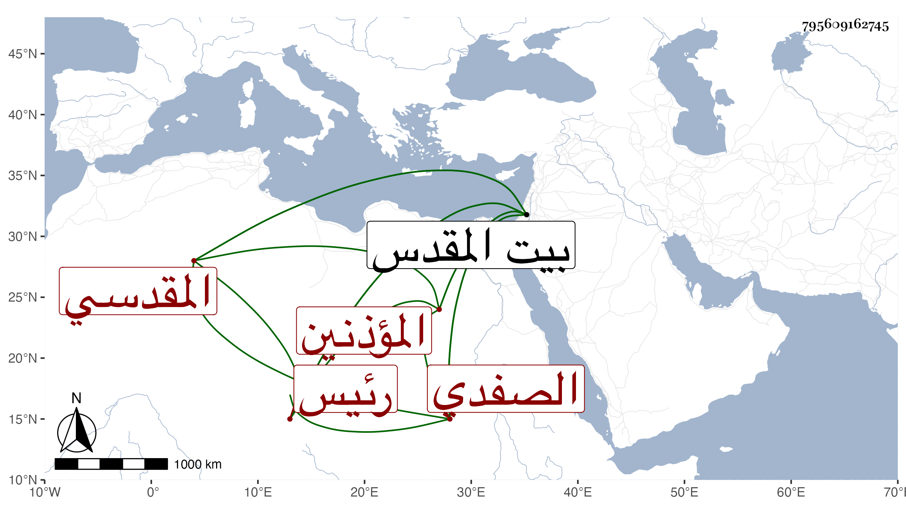

0902Sakhawi.DawLamic.ITO20230111-ara1.EIS1600.795609162745
Biography ID: 795609162745
1005
سليمان بن علي بن أبي بكر علم الدين الصفدي ثم المقدسي رئيس المؤذنين بالمسجد الأقصى . ولد تقريبا سنة خمس وثمانين وسبعمائة ببيت المقدس وحفظ القرآن وتلاه بالقراءات على الشيخ محمد بن الخليلي وتعانى المدح في المواعيد من صغره وهلم جرا ، وحج وكان إنسانا حسنا لقيته ببيت المقدس وذكر لنا التقي أبو بكر القلقشندي أنه سمع على أبي الخير بن العلائي ختم الصحيح فقرأت عليه جزءا ، ومات قريب الستين .
